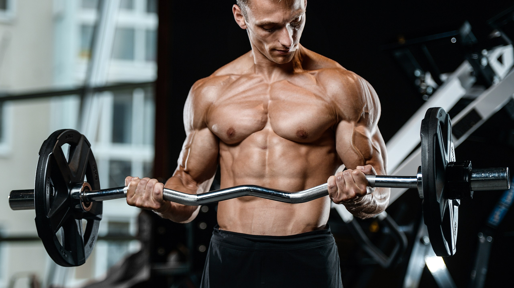
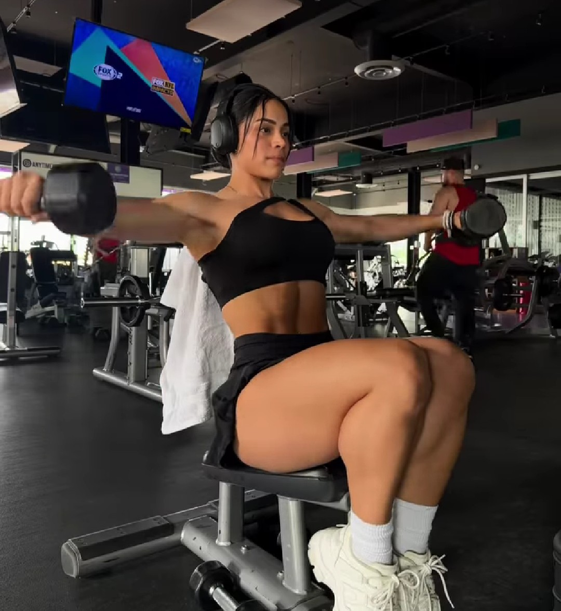
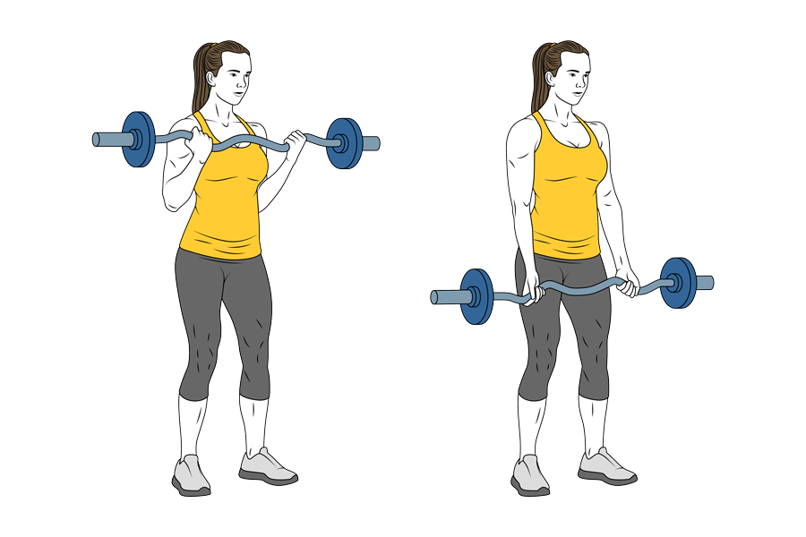
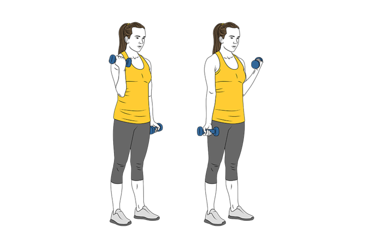

RUTINA DE BRAZO

Entrenamiento de brazos de 20 minutos

- Superserie
- 3 series x 8-10 repeticiones
- Press de banca con agarre estrecho (La tecnica correcta para hacer press de banca para pecho)
- Curl en banco inclinado con mancuerna
- Superserie
- 3 series x 10-12 repeticiones
- Press Frances con barra z
- Curl con barra Z (agarre abierto)
- Serie gigante
- 2 series: Serie 1: 15 repeticiones / Serie 2: al fallo
- Extension de triceps en polea por detras de la cabeza.
- Curl con mancuerna manteniendo las manos en posicion supina.
- Extension de triceps con agarre supino (Tumbado)
Consejos para entrenar tus brazos al maximo
Los biceps y triceps son musculos a los que podemos darle un buen volumen de entrenamiento, como 20 series por
semana.
La variedad de ejercicios es fundamental, pero apunta estos, los mas efectivos...

- Para biceps: dominadas supinas, curl con barra Z en banco Scott y curl de martillo con mancuerna.
- Para triceps: fondos o dips, press frances con barra Z y flexiones diamante.
- Ultimo consejo: para ayudar a tus brazos a crecer, no olvides incluir en tu rutina ejercicios multiarticulares como press
de pecho, press de hombro, dominadas y pesos muertos.
Entrenamiento de brazos para biceps y triceps sin pesas

- Fondos o dips para triceps en paralelas: 3 series buscando el fallo muscular
- Flexiones diamante con manos juntas: 4 series de 12 repeticiones
- Fondos para hombros: 4 series de 10 repeticiones
- Flexiones de hombros con los pies apoyados en la pared: 4 series de 8 a 10 repeticiones
- Dominadas con agarre supino, prono y neutro: 5 series y buscamos el fallo muscular
- Flexiones para biceps: 4 series de 12 a 15 repeticiones
- Flexiones clasica para pecho: 5 series buscando el fallo muscular